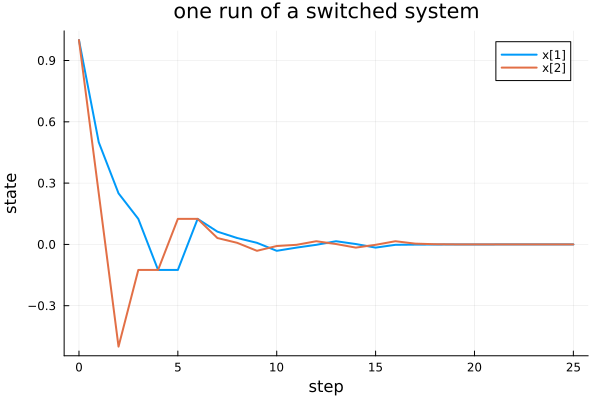
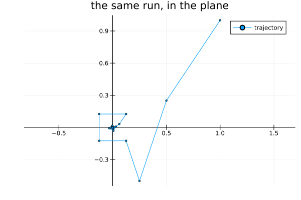

Simulating: what a run looks like
A certificate quantifies over every switching sequence. A simulation takes one.
import PathCompleteCertificates as PCC
using Random
using Plots
A = [[0.5 0.0; 0.0 0.25], [0.0 1.0; -1.0 0.0]]
system = PCC.switched_system(A)Hybrid System with automaton HybridSystems.OneStateAutomaton(2)A given switching sequence
Pass the word and you get exactly that run. Prefer this in a test: Julia's default random stream is not stable across releases.
trajectory = PCC.simulate(system, [1.0, 1.0], [1, 2, 1, 2])
PCC.switching(trajectory), length(PCC.states(trajectory))([1, 2, 1, 2], 5)Random switching respects the automaton
With an integer instead of a word, the mode is drawn from what the system's automaton admits — not from 1:n. Invisible above, load-bearing here.
using HybridSystems
constraint = GraphAutomaton(2) # mode 2 may not follow mode 2
add_transition!(constraint, 1, 1, 1)
add_transition!(constraint, 1, 2, 2)
add_transition!(constraint, 2, 1, 1)
constrained = PCC.switched_system(A; automaton = constraint)
rng = MersenneTwister(42)
word = PCC.switching(PCC.simulate(constrained, [1.0, 1.0], 20; rng = rng))20-element Vector{Int64}:
1
2
1
2
1
2
1
2
1
1
1
1
2
1
1
2
1
1
1
2No two consecutive 2s, by construction:
any(word[k] == 2 && word[k + 1] == 2 for k in 1:(length(word) - 1))falsePlotting
The recipe ships as a package extension, so plot works once Plots is loaded without Plots ever being a dependency of the package.
rng = MersenneTwister(7)
run = PCC.simulate(system, [1.0, 1.0], 25; rng = rng)
plot(run; title = "one run of a switched system", lw = 2)
The default view is each coordinate against the step, which works for any state dimension. A phase portrait, when the state is planar:
visited = PCC.states(run)
plot(
getindex.(visited, 1),
getindex.(visited, 2);
aspect_ratio = :equal,
framestyle = :origin,
marker = :circle,
markersize = 2,
lw = 1,
label = "trajectory",
title = "the same run, in the plane",
)
This page was generated using Literate.jl.